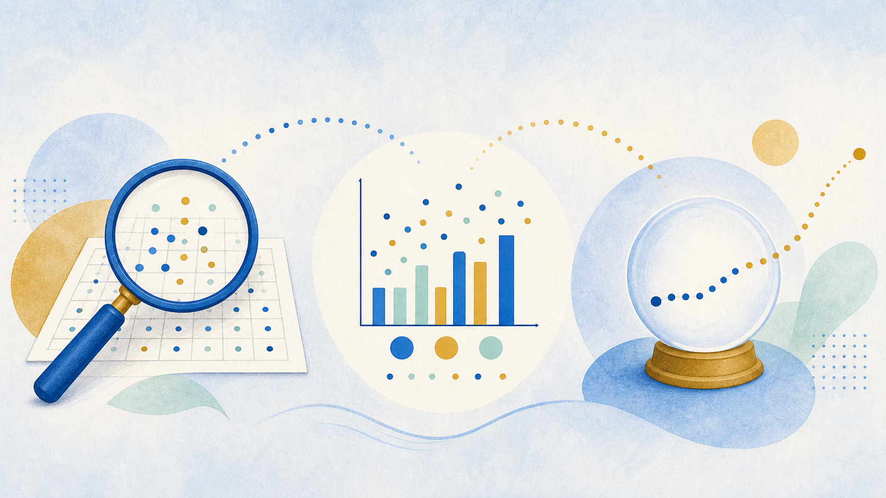
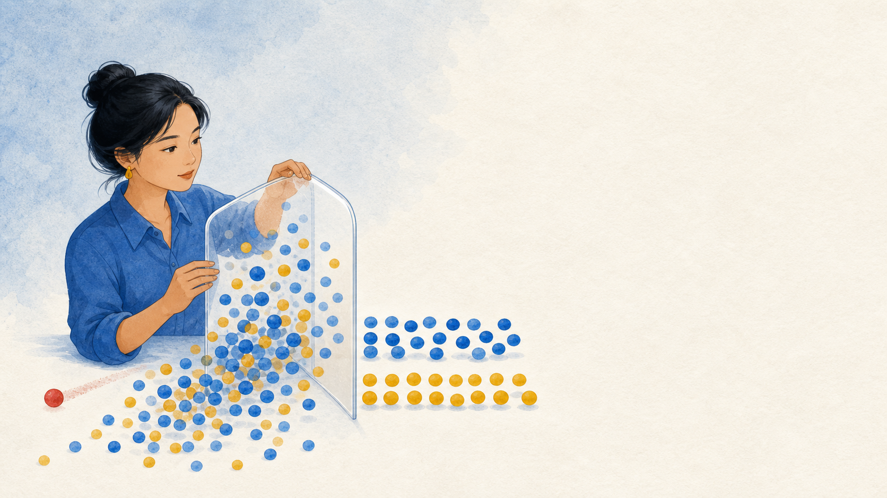

01
Recognize
the analysis, visualization, and prediction work inside a data project.
Introduction to data analysis: questions, workflow, tools, and your first dataset.
Start here: Name one decision you have seen guided by data. What made you trust it?
the analysis, visualization, and prediction work inside a data project.
a project through the five-phase analytics workflow.
a JupyterLab notebook, load data, and inspect a DataFrame.
It reviews past sales, charts rush-hour demand, then forecasts which muffins to bake.
Talk with a partner:
Which part examines the data? Which part communicates it? Which part looks ahead?
Data science combines methods, computing, and domain knowledge to turn data into useful insight.
Follow the question, then the evidence.

Clean, transform, compare, group, and interpret data.
Use charts and displays to make evidence easier to understand.
Use past patterns to estimate a future outcome.
A strong project moves among all three. It does not stop at a spreadsheet.
Analysis, visualization, or prediction?
Analysis, visualization, or prediction?
Analysis, visualization, or prediction?
Bring in data from a file, database, API, or other source.
Find missing, duplicate, inconsistent, or invalid values.
Shape data into a form that supports the question.
Compare, calculate, group, and look for insight.
Build a clear chart for the audience and decision.

Blank values where a measurement should exist.
The same record appears more than once.
“NY,” “N.Y.,” and “New York” mean the same thing.
Impossible values, wrong types, or future dates.
Question: Which problem could change a decision without being obvious in the chart?
Analysis often sends you back to cleaning or preparation. That is normal. The goal is sound evidence, not a perfect straight line.
In this course, Get, Clean, and Prepare give you a practical way to recognize ETL work.
You write a little code, run it, inspect the result, and document what you learned in the same notebook.
Run, inspect, explain, and repeat.
Runs Python and shows output below the cell.
print("Hello, Data Science!")
Explains the purpose, reasoning, and findings in readable text.
# Phase 1: Get the DataPress Shift+Enter to run the current cell and move to the next one.
Python, JupyterLab, pandas, NumPy, matplotlib, and a package manager in one install.
import pandas as pd print(pd.__version__)
Use the default base environment for this course.
Load, clean, filter, and analyze tables.
Work with arrays and numerical computing.
Create clear plots and figures.
Build polished statistical charts.
Put import statements at the top of your notebook so readers can see what your work needs.
import pandas as pd df_gapminder = pd.read_csv("assets/code/chapter-01/gapminder.csv")
pdThe standard abbreviation for the pandas module.
read_csv()A method that reads a CSV file into memory.
df_gapminderA descriptive variable name for a DataFrame.
| country | year | continent | lifeExp | gdpPercap |
|---|---|---|---|---|
| Afghanistan | 1952 | Asia | 28.801 | 779.45 |
| Albania | 1952 | Europe | 55.230 | 1601.06 |
| Algeria | 1952 | Africa | 43.077 | 2449.01 |
These checks show sample rows, data types, missing values, summary statistics, and the table’s dimensions.
Launch JupyterLab and create your notebook.
Use .info() and .describe().
Create a calculated gdp_total column.
Find averages and the highest life expectancy.
Build a scatter plot and explain what it shows.
Your notebook should show what you did and why the result matters.
Name the three components of data science.
Why might an analyst return to an earlier workflow phase?
What would you inspect before trusting a new DataFrame?
Next step: Open Skills Lab 1A and make your first notebook show the full analysis process.